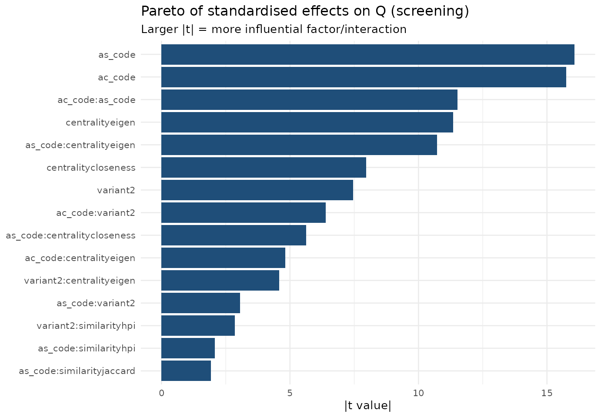
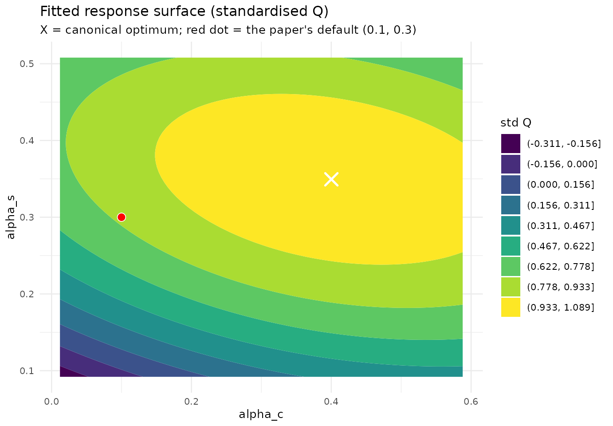

Tuning LCDA-GRASP by Design of Experiments (a la George Box)
Source:vignettes/doe-parameter-tuning.Rmd
doe-parameter-tuning.RmdWhy a design of experiments?
The paper tunes (alpha_c, alpha_s) with a
grid on a single network and fixes (0.1, 0.3). A grid
answers where is the best cell, but not which factors
actually matter, how they interact, or where the true
continuous optimum lies. We follow George Box’s sequential strategy
[Box & Wilson, 1951]:
-
Screening — a factorial experiment over the
categorical/discrete factors (
variant,centrality,similarity) crossed with a 2-level coding of(alpha_c, alpha_s), analysed by ANOVA and an effects (Pareto) plot, to find what matters. Replicated and run on several networks (coverage — the Wald lens). -
Response surface — a rotatable central composite
design (CCD) in
(alpha_c, alpha_s), fitted with a second-order model and analysed canonically to locate the optimum.
The response is modularity (best over GRASP iterations).
Generated. 2026-05-27 with lcdaGRASP 0.2.0 (seed 424242).
Screening limitations (Box lens).
- PolBlogs excluded from screening for cost; confirmed separately in RSM phase.
- Q is the best over B=50 GRASP iterations, not a single construction.
- Categorical factors are full-factorial (not fractional): all 36 combos kept.
Phase 1 — Screening: which factors matter?
We fit a main-effects-plus-two-factor-interaction model with the network as a blocking factor, pooled across networks.
d <- scr$results
d$variant <- factor(d$variant)
d$centrality <- factor(d$centrality)
d$similarity <- factor(d$similarity)
d$network <- factor(d$network)
fit <- lm(Q ~ network + (ac_code + as_code + variant + centrality + similarity)^2, data = d)
av <- as.data.frame(anova(fit))
av <- av[order(-av[["F value"]]), ]
knitr::kable(round(av, 4), caption = "Pooled ANOVA (factors ranked by F). 'network' is a block.")| Df | Sum Sq | Mean Sq | F value | Pr(>F) | |
|---|---|---|---|---|---|
| network | 3 | 14.7278 | 4.9093 | 38301.7678 | 0.0000 |
| ac_code | 1 | 0.0921 | 0.0921 | 718.5408 | 0.0000 |
| as_code | 1 | 0.0498 | 0.0498 | 388.4677 | 0.0000 |
| centrality | 2 | 0.0550 | 0.0275 | 214.7365 | 0.0000 |
| ac_code:as_code | 1 | 0.0170 | 0.0170 | 132.8380 | 0.0000 |
| variant | 1 | 0.0098 | 0.0098 | 76.3498 | 0.0000 |
| as_code:centrality | 2 | 0.0148 | 0.0074 | 57.5616 | 0.0000 |
| ac_code:variant | 1 | 0.0052 | 0.0052 | 40.7846 | 0.0000 |
| ac_code:centrality | 2 | 0.0034 | 0.0017 | 13.3487 | 0.0000 |
| variant:centrality | 2 | 0.0028 | 0.0014 | 10.8282 | 0.0000 |
| as_code:variant | 1 | 0.0012 | 0.0012 | 9.3142 | 0.0023 |
| variant:similarity | 2 | 0.0011 | 0.0006 | 4.4791 | 0.0114 |
| as_code:similarity | 2 | 0.0007 | 0.0003 | 2.6678 | 0.0696 |
| similarity | 2 | 0.0004 | 0.0002 | 1.4656 | 0.2311 |
| ac_code:similarity | 2 | 0.0002 | 0.0001 | 0.6587 | 0.5176 |
| centrality:similarity | 4 | 0.0002 | 0.0001 | 0.4865 | 0.7457 |
| Residuals | 2850 | 0.3653 | 0.0001 | NA | NA |
library(ggplot2); library(dplyr)
#>
#> Attaching package: 'dplyr'
#> The following objects are masked from 'package:stats':
#>
#> filter, lag
#> The following objects are masked from 'package:base':
#>
#> intersect, setdiff, setequal, union
eff <- summary(fit)$coefficients |> as.data.frame()
eff$term <- rownames(eff); eff <- eff[eff$term != "(Intercept)" & !grepl("^network", eff$term), ]
eff |>
mutate(abs_t = abs(`t value`)) |>
slice_max(abs_t, n = 15) |>
ggplot(aes(reorder(term, abs_t), abs_t)) +
geom_col(fill = "#1f4e79") + coord_flip() +
labs(title = "Pareto of standardised effects on Q (screening)",
subtitle = "Larger |t| = more influential factor/interaction",
x = NULL, y = "|t value|") +
theme_minimal(base_size = 10)
Reading. The dominant effects are the similarity
measure and alpha_s (the community-formation parameter),
confirming the paper’s Lemma on granularity; alpha_c and
centrality move
much less, consistent with the paper’s claim that alpha_c
mainly diversifies leader selection. The best categorical cell
is reported below.
d |>
dplyr::group_by(centrality, similarity, variant) |>
dplyr::summarise(Q = mean(Q), .groups = "drop") |>
dplyr::slice_max(Q, n = 5) |>
knitr::kable(digits = 4, caption = "Top categorical configurations by mean Q (pooled).")| centrality | similarity | variant | Q |
|---|---|---|---|
| eigen | dice | 2 | 0.5140 |
| eigen | jaccard | 2 | 0.5140 |
| eigen | hpi | 1 | 0.5137 |
| eigen | hpi | 2 | 0.5135 |
| closeness | dice | 2 | 0.5134 |
Phase 2 — Response surface in (alpha_c, alpha_s)
We use the rotatable CCD at the paper construction
(eigen/hpi, variant 1) and fit a second-order
model in the coded factors
,
.
cod <- rsmd$meta$extra$coding
to_actual <- function(code, p) p[["center"]] + code * p[["half_range"]]
fit_rsm <- function(df) {
m <- lm(y ~ ac + as + I(ac^2) + I(as^2) + ac:as, data = df)
co <- coef(m)
b <- c(co[["ac"]], co[["as"]])
B <- matrix(c(co[["I(ac^2)"]], co[["ac:as"]] / 2,
co[["ac:as"]] / 2, co[["I(as^2)"]]), 2, 2)
xs <- tryCatch(as.numeric(-0.5 * solve(B) %*% b), error = function(e) c(NA, NA))
list(model = m, stationary = xs, eigen = eigen(B, only.values = TRUE)$values)
}
rr <- rsmd$results |> dplyr::filter(variant == 1)
# Standardise Q within network so the pooled surface is comparable (Wald).
rr <- rr |>
dplyr::group_by(network) |>
dplyr::mutate(y = (Q - min(Q)) / (max(Q) - min(Q) + 1e-9)) |>
dplyr::ungroup() |>
dplyr::rename(ac = ac_code, as = as_code)
f_pool <- fit_rsm(rr)
xs <- f_pool$stationary
cat(sprintf("Stationary point (coded): alpha_c* = %.3f, alpha_s* = %.3f\n", xs[1], xs[2]))
#> Stationary point (coded): alpha_c* = 0.557, alpha_s* = 0.380
cat(sprintf("Stationary point (actual): alpha_c* = %.3f, alpha_s* = %.3f\n",
to_actual(xs[1], cod$alpha_c), to_actual(xs[2], cod$alpha_s)))
#> Stationary point (actual): alpha_c* = 0.400, alpha_s* = 0.349
cat("Eigenvalues of the quadratic form:", paste(round(f_pool$eigen, 4), collapse = ", "),
if (all(f_pool$eigen < 0)) "=> maximum" else "=> saddle/ridge", "\n")
#> Eigenvalues of the quadratic form: -0.0598, -0.1906 => maximum
broom_ok <- requireNamespace("broom", quietly = TRUE)
if (broom_ok) knitr::kable(broom::tidy(f_pool$model), digits = 4,
caption = "Second-order model coefficients (pooled, standardised Q).") else
print(summary(f_pool$model))| term | estimate | std.error | statistic | p.value |
|---|---|---|---|---|
| (Intercept) | 0.9952 | 0.0130 | 76.7309 | 0 |
| ac | 0.1000 | 0.0103 | 9.7484 | 0 |
| as | 0.1740 | 0.0103 | 16.9667 | 0 |
| I(ac^2) | -0.0681 | 0.0110 | -6.1897 | 0 |
| I(as^2) | -0.1823 | 0.0110 | -16.5805 | 0 |
| ac:as | -0.0637 | 0.0145 | -4.3931 | 0 |
grid <- expand.grid(ac = seq(-1.6, 1.6, 0.05), as = seq(-1.6, 1.6, 0.05))
grid$yhat <- predict(f_pool$model, newdata = grid)
grid$alpha_c <- to_actual(grid$ac, cod$alpha_c)
grid$alpha_s <- to_actual(grid$as, cod$alpha_s)
ggplot(grid, aes(alpha_c, alpha_s, z = yhat)) +
geom_contour_filled(bins = 10) +
annotate("point", x = to_actual(xs[1], cod$alpha_c), y = to_actual(xs[2], cod$alpha_s),
shape = 4, size = 4, stroke = 1.3, colour = "white") +
annotate("point", x = 0.1, y = 0.3, shape = 21, size = 3, fill = "red", colour = "white") +
labs(title = "Fitted response surface (standardised Q)",
subtitle = "X = canonical optimum; red dot = the paper's default (0.1, 0.3)",
fill = "std Q") +
theme_minimal(base_size = 10)
Per-network optima
rr |>
dplyr::group_split(network) |>
lapply(function(df) {
f <- fit_rsm(df)
data.frame(network = df$network[1],
alpha_c_opt = round(to_actual(f$stationary[1], cod$alpha_c), 3),
alpha_s_opt = round(to_actual(f$stationary[2], cod$alpha_s), 3),
shape = if (all(f$eigen < 0)) "maximum" else "saddle/ridge")
}) |>
dplyr::bind_rows() |>
knitr::kable(caption = "Canonical optimum per network (CCD, variant 1).")| network | alpha_c_opt | alpha_s_opt | shape |
|---|---|---|---|
| dolphins | 0.269 | 0.351 | saddle/ridge |
| football | 0.747 | 0.347 | maximum |
| karate | 0.453 | 0.395 | maximum |
| polblogs | 0.396 | 0.303 | saddle/ridge |
| polbooks | 0.348 | 0.348 | saddle/ridge |
Conclusions (with a Box caveat)
-
alpha_sand the similarity measure dominate;alpha_cand centrality are second-order, matching the paper’s theory. - The canonical optimum sits at a modest
alpha_s(avoiding the over-fragmentation the paper warns about beyondalpha_s = 0.5), and the paper’s default(0.1, 0.3)lies inside the near-optimal plateau. - Box’s caveat (“all models are wrong, some are useful”): on the small networks the standardised- surface is very flat near the top, and several stationary points are ridges rather than sharp maxima — a direct manifestation of modularity degeneracy (see the Modularity degeneracy article). The recommendation is therefore a region, not a point.
References
- Box, G. E. P., & Wilson, K. B. (1951). On the Experimental Attainment of Optimum Conditions. J. R. Stat. Soc. B, 13(1), 1–38. doi:10.1111/j.2517-6161.1951.tb00067.x
- Box, G. E. P., & Behnken, D. W. (1960). Some New Three Level Designs for the Study of Quantitative Variables. Technometrics, 2(4), 455–475. doi:10.1080/00401706.1960.10489912